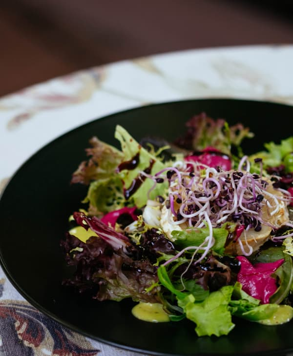
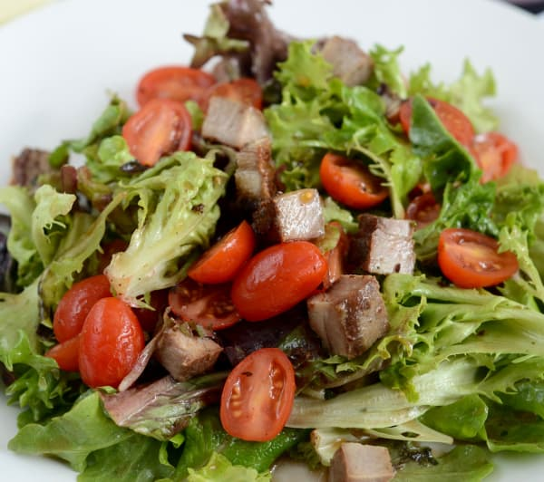

Verduras
Cor verde das plantas. Hortaliça.Algumas verduras folhosas desenvolvem estratégias de defesa intrigantes contra predadores. Por exemplo, a mostarda e a rúcula têm um sabor mais picante devido à produção de compostos químicos que atuam como mecanismos de defesa naturais contra herbívoros.
Existem inúmeras variedades de alface. A alface romana, é conhecida por suas folhas mais longas e textura crocante, enquanto a alface frisée apresenta folhas mais onduladas e um sabor levemente amargo.
Em geral, verduras folhosas surpreendem pela rapidez em seus ciclos de crescimento, exigindo cerca de 40 a 55 dias, dependendo da variedade e das condições. Ao contrário de outras plantas, essas folhas oferecem frescor em um curto período, sendo uma escolha eficiente para colher benefícios nutricionais rapidamente. Assim como legumes, o ciclo de crescimento das verduras é influenciado pelo clima, sendo essencial ajustar os cuidados conforme a variedade cultivada. Explore a diversidade de sabores e desfrute da vitalidade que as verduras frescas podem trazer à sua mesa.
Verduras folhosas são conhecidas por serem alimentos de baixo teor calórico. Em média, fornecem aproximadamente 20 a 50 calorias por 100 gramas, dependendo da variedade específica. Essas folhas nutritivas oferecem uma opção saudável e leve para aqueles que buscam manter uma dieta equilibrada. Seu baixo teor calórico as torna uma escolha eficiente para quem procura manter uma ingestão controlada de calorias. Ao incorporar verduras frescas em sua alimentação, você não apenas adiciona diversidade de sabores, mas também desfruta de uma opção leve e nutritiva.
“Não subestime a magia das verduras: elas podem transformar uma refeição e a sua saúde.”
- Categoria: Verduras
- Surgiu: 12.000 anos
- Cultivo: 40 - 55 dias
- Média calórica: 29 kcal
- Preço médio: R$ 3,20 Kg
Cultivar verduras é uma experiência gratificante. Escolha um local ensolarado, prepare o solo, e escolha variedades adaptadas ao clima local. Siga as orientações de plantio, mantenha o solo úmido e com drenagem adequada. Remova pragas, como pulgões e lagartas, e proteja suas verduras. Colha as folhas quando jovens e tenras, usando tesouras de poda. Considere a rotação de culturas para manter a saúde do solo. Cultivar verduras em casa não apenas fornece alimentos frescos, mas também fortalece sua conexão com o ciclo de crescimento das plantas.